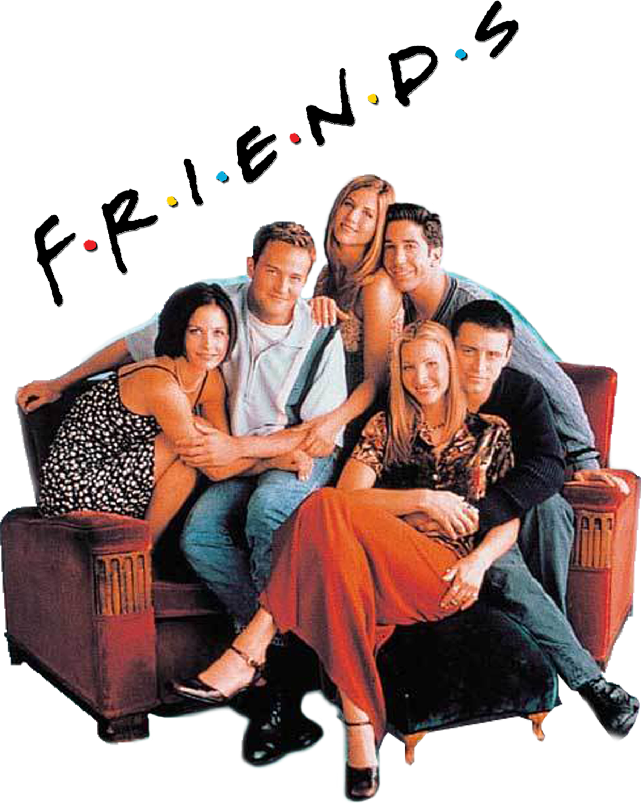
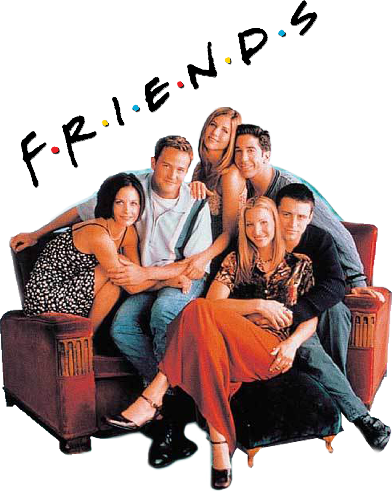
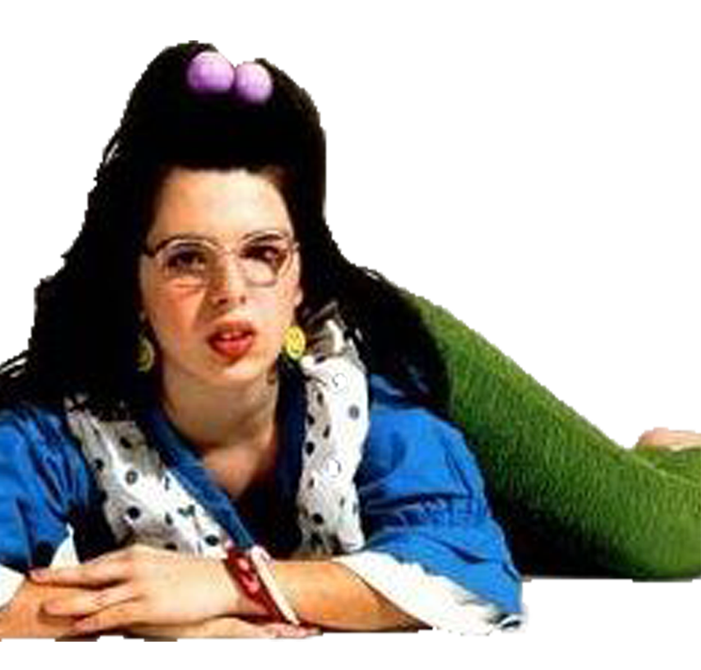
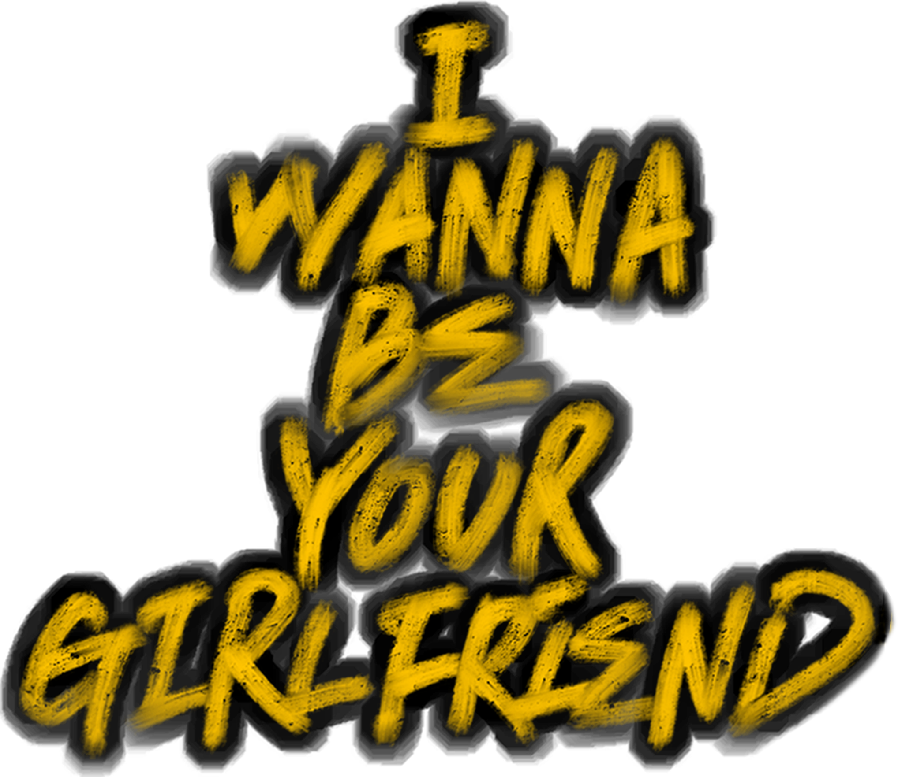
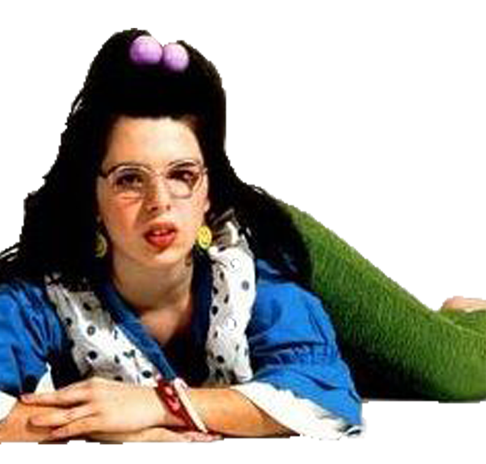
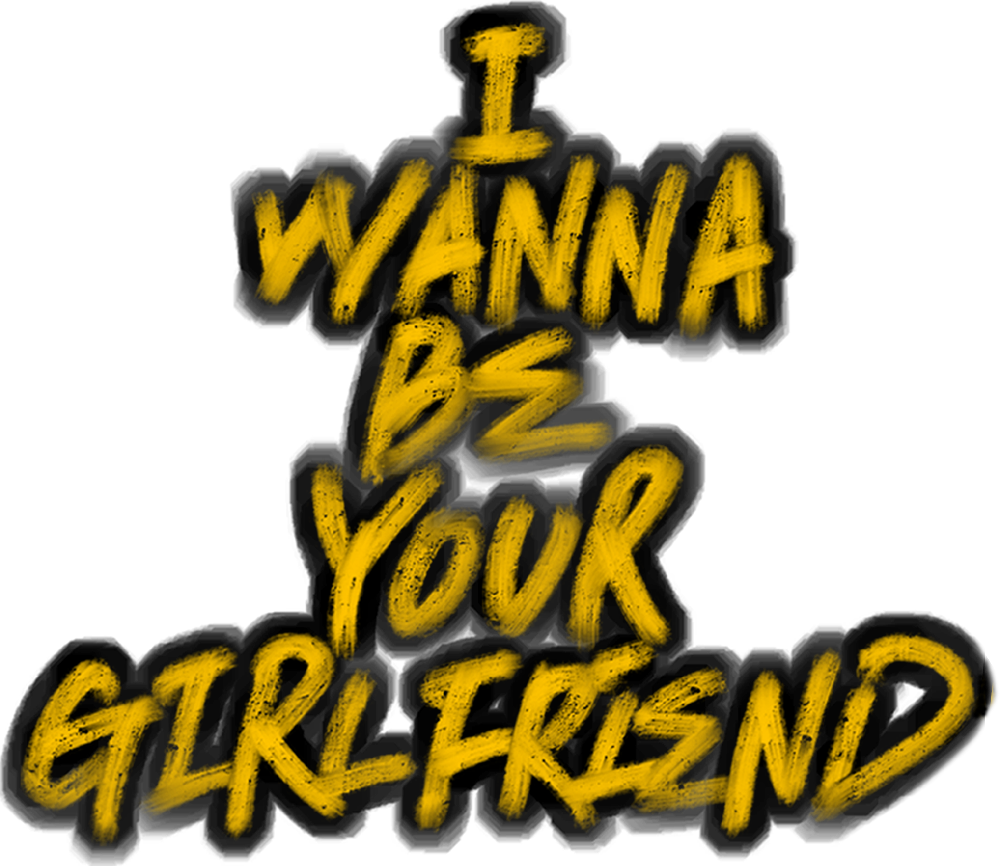

1990년대
미국. 그리고
NEW YORK


가장 도시다운 도시
NEW YORK
뉴욕(New York)은 미국 북동부, 뉴욕주의 남쪽 끝에 있는
도시이다. 미국에서 가장 인구가 많은 도시로, 세계에서 가장
인구가 많은 도시 중 하나이다. 세계적인 대도시인 뉴욕은
상업, 금융, 미디어, 예술, 패션, 연구, 기술, 교육,
엔터테인먼트 등 많은 분야에 걸쳐 큰 영향을 끼치고 있으며
도쿄, 런던과 함께 세계 3대 도시이자 세계의 문화 수도로
불리기도 한다. 이 외에도 뉴욕은 국제 외교 에서 중요한
도시이며 유엔 본부가 있다.
패션의 역사,
90년대 미국패션
이가 복식에서도 작용하였고, 다양한 스타일의 혼합 경향이
나타나게 되었다.
경기침체와 걸프전의 영향으로 절제와 민속풍의 디자인,
복고적 취향과 세기말적 경향, 미래주의 등이 공존한 시기로
모더니즘 사회에 대한 불신이 커짐에 따라 포스트 모더니즘의
영향이 극대화되었고 과거의 생활양식에 대한 긍정적 태도가
나타났다.
이는 서로 다른 문화와 요소들을 병렬 시킴으로써 과거와
미래, 동양과 서양이 독특하게 재구성된 패션으로
표현되었다.

동시대를 강타한
동갑내기
“TAKE A BOW”로 7주간 1위를 기록한 마돈나는 한마디로
존경스럽다.
미국 여성인권 운동가들이 미래 여성의 모델 이라고
극찬하며 대부분의 여자가수들이 인간적으로 싫든 좋든,
가수로서는 무조건 닮고 싶어하는 표본이다.
한때 팝의 황제로 불리웠던 “마이클 잭슨”의 행보와 비교해
본다면 사업가로, 가수로, 문화아이콘으로 그 누구에게도
뒤지지 않는 카리스마와 차가우리만큼 이기적인 냉정함은
“마돈나”가 단순한 sexy symbol이 아님을 증명한다.
마이클 잭슨은 팝의 황제로 불리는 미국의
가수이다. 음악, 춤, 패션에 대한 그의 공헌은
그의 사생활과 함께 40년이 넘도록 그를
대중문화의 세계적 인물로 만들었다. 당시
그의 혁명적인 등장은 문화계를 비롯하여
전세계의 뿌리깊은 병폐로 남아있던 인종
차별로 인한 인종 장벽을 무너뜨리며 흑인의
성공적인 사회 진출을 앞세운 선구가 역할을
하였다.
또한 대중음악에서의 시각적 요소를 부각
시키며 음악 산업을 뒤집어 놓았다.
그는 20세기 문화사에서 가장 중요한 인물로
평가되며, 전 세계 대중음악을 상징하는
아티스트이다.
90년대 마이클 잭슨은 “YOU ARE NOT
ALONE”을 1위에 올려 놓으면서 아직
“팝의 황제”가 살아있음을 보여줬지만, 그의
음악세계는 아동성추행 문제와 장난스런
결혼, 이혼 등으로 지탄을 받기 시작했다.
1990년대 중반부터 마이클 잭슨은 명예와
부를 제대로 유지하지 못하면서 천재적인
음악성마저 휘청거리고 있었다.
결국 이 노래는 아직까지 마이클 잭슨의
‘마지막 1위곡’ 으로 기록되어 있다.
X세대가
일과 사랑을 대하는
새로운 가치관.
《프렌즈》는 미국 NBC에서 방송된 시트콤이다.
미국 뉴욕시 맨해튼의 그리니치 빌리지에 사는 2-30대의 세
명의 남자와 세 명의 여자의 생활을 그린 시트콤이다.
미국 현지에서 방영 기간 내내 최고의 인기를 끌었으며, 전
세계적으로 가장 큰 성공을 거둔 시트콤이다. 프렌즈는 시즌
내내 각 주인공들의 헤어, 패션, 각 에피소드의 소품 등 모든
것이 화제를 모았고 특히 레이첼의 헤어 스타일은 미국
여성들에게 최고의 인기를 끌었다.
 

<90s 미국문화>,2019
이 웹사이트는 영화 < Welcome to the dollhouse >에 영감을 받아
90년대 미국 문화를 소개하기 위해 만들어진 웹사이트 입니다.
아래부터는 영화에 대한 소개입니다.
 



90년대 분위기가
잘 드러나는 영화
키도 작고 뚱뚱한 도수 높은 안경을 쓴 벤자민 프랭클린 주니어
하이스쿨에 다니는 중1 여학생 돈 위너. 학교에 가면 친구들에게
따돌림 당하며 바보니 레즈비언이니 놀림 받고있다.
학교 식당에서 빈자리 하나 찾는 것조차 쉬운 일이 아니다. 집에
돌아와도 예쁜 짓만 골라하는 여동생 미시와 모범생 오빠
사이에 끼여 미운오리새끼 취급을 받고있다.
그러던 중, 시험 기간에 돈의 답안지를 커닝하려던
불량끼 있는 소년 브랜든을 고자질한 대가로 둘 다 근신을
당하고 브랜든은 돈을 강간하겠다고 협박한다. 게다가 브랜든의
여자친구인 로리타 역시 선을 넘는 따돌림으로 돈은 고달픔의
연속을 맛보고 있다.
돈에게 있어 인생은 너무나도 잔인하다.
그러나 그런 돈에게도 첫사랑이 찾아온다.
물론 짝사랑이지만.
상대는 오빠 마크의 밴드에 새로 영입된 바람둥이 고등학생
스티브. 사랑의 열병과 주변의 괴롭힘이 교차하는 가운데 돈은
또 한 번 사고를 내고 만다. 조회시간에 자신을 괴롭히는
애들에게 종이 조각을 빨대로 불다가 선생님의 눈을 명중시킨 것.
결과는 부모님의 호출. 스티브에 대한 짝사랑으로 가슴
태우던 돈은 부모님의 20주년 결혼 기념 파티날, 스티브를
찾아가지만 저능아라는 소리까지 들으며 철저하게 무시당한다.
그리고 며칠 후 너무 예쁜 짓만 해서 돈의 미움을
사던 동생 미시가 돈의 잘못으로 유괴를 당하고 만다. 그러나
돈의 잘못이란 걸 아는 사람은 아무도 없었고 돈은 이 기회에
가족들의 사랑을 얻어 보고자 한다. 돈이 미시를 찾아 뉴욕으로
간 사이에 유괴되었던 미시가 돌아오고 아무도 돈이 뉴욕을
갔고 집을 비웠다는 사실 조차 알지 못한다. 뉴욕에서 돌아온
이후에도 돈에게는 어떠한 변화도 일어나지 않는다.
너무나 잔인한 중학 1년이 그렇게 흘러갈 뿐이었다.